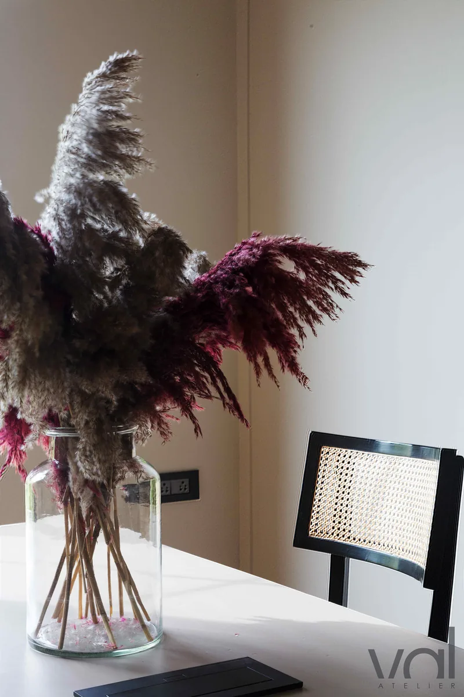

Services
Four ways of working with the studio. Most projects are the first: a full engagement from plan to handover. The others exist for spaces that need less, or need it sooner.
-
The complete engagement for a home or apartment: spatial planning, material palette, joinery and lighting design, drawings for site, contractor coordination, and the final styling layer. One team from the first walkthrough to the day you move back in.
- Spatial planning and layout revisions
- Material palette built from physical samples
- Joinery, lighting and finish drawing sets
- Site coordination and sample panels
- Furniture, art and styling at handover
-
Boutiques, salons, cafés and showrooms, designed around how a customer moves and how the space will wear. Programme and phasing are treated as design constraints from day one, because a trading space cannot be closed indefinitely.
- Customer flow, display and back of house planning
- Identity carried into material and light
- Durability and maintenance judged into every finish
- Phased delivery around trading hours
- Signage, fixture and display detailing
-
For spaces where the architecture is already right and the room simply has not landed. Furniture, textiles, art, objects and lighting selected, sourced and installed together, so the change happens in days rather than months.
- Furniture and textile selection and sourcing
- Art and object curation
- Decorative lighting and layering
- Installed in a single day where possible
-
A shorter engagement for clients already working with an architect or contractor: a palette, a set of decisions, and a written direction the site can build from. Useful early, when the choices that are expensive to reverse are still open.
- Consultation at the studio or on site
- Material and finish direction with samples
- Colour, lighting and layout review
- A written summary the site team can work to

Before you enquire.
Fees are quoted per project once the scope is clear: area, condition of the space, how much joinery is involved and how much of it we are running on site. We would rather price a project properly than quote a rate that has to be revised later.
The most useful things to send with a first enquiry: a floor plan if you have one, the location, a rough budget range and the date you would like to be using the space.